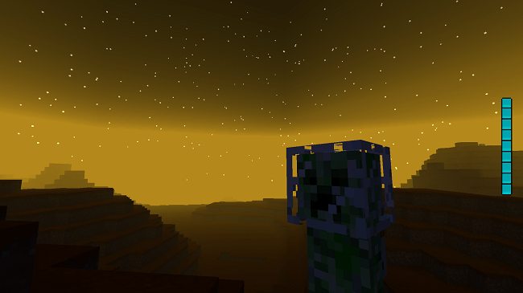
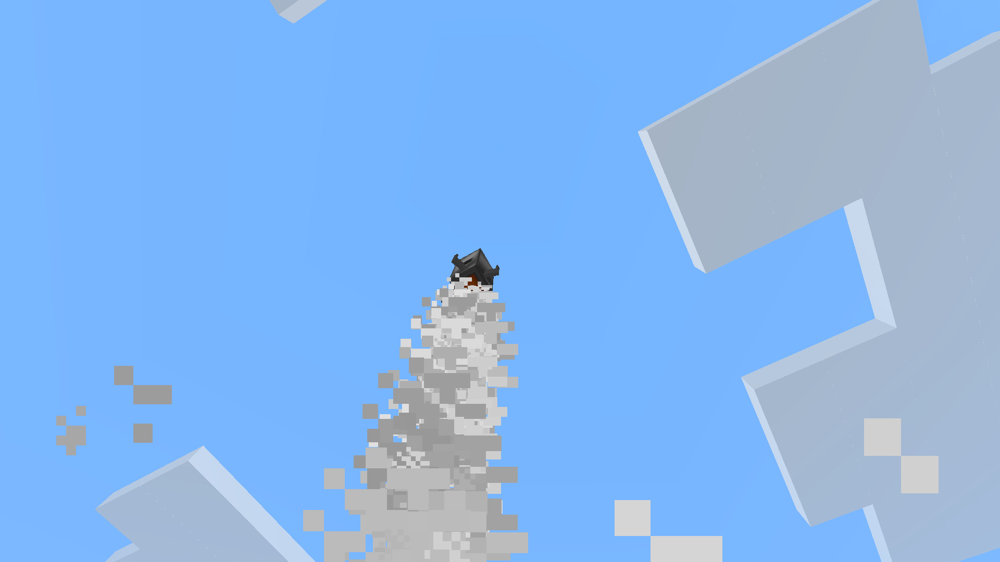
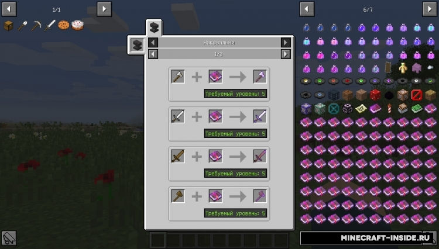
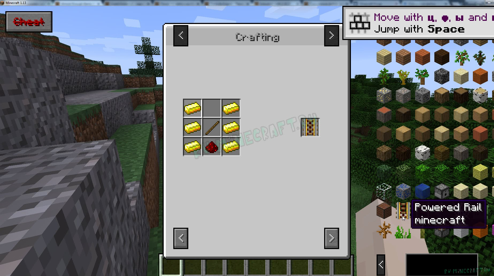
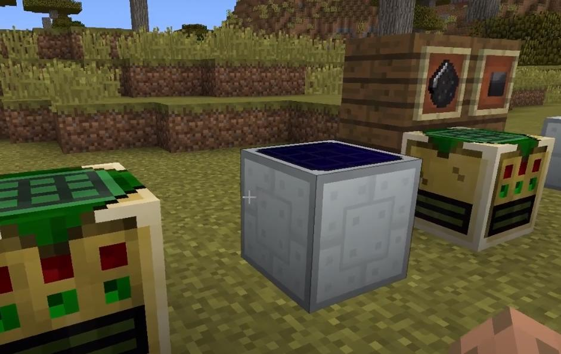
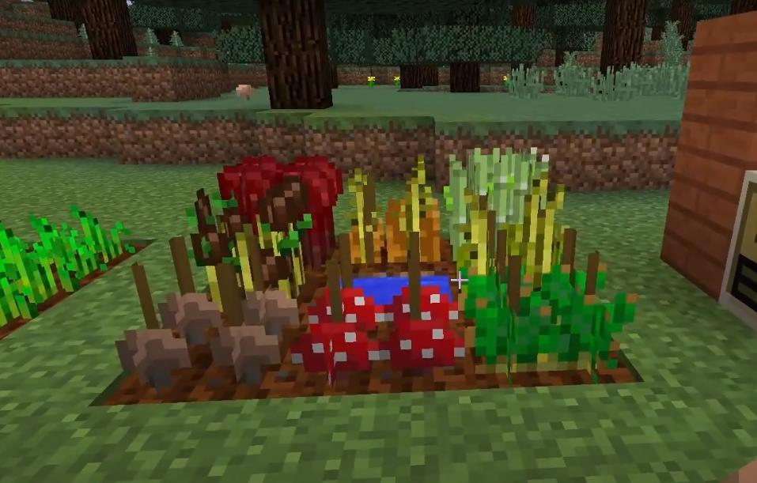
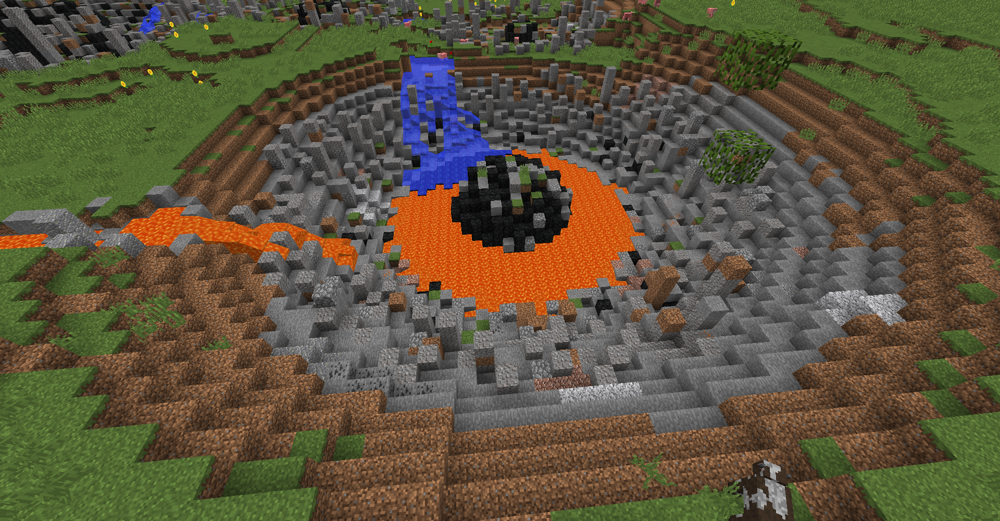
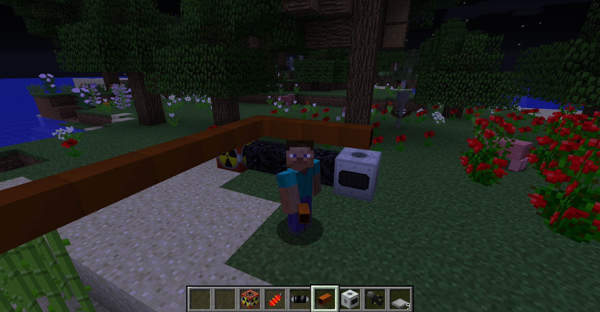

Galacticraft — модификация, добавляющая в игру космические ракеты и множество колонизируемых планет. На каждой планете генерируются уникальные ресурсы, в зависимости от типа планеты и пригодности для жизни.


Установка
Установите Minecraft Forge. Скачайте GalacticraftCore и MicdoodleCore. Скопируйте файлы в папку
<папка игры>/mods.
Just Enough Items (сокр. JEI) — модификация, показывающая рецепты крафта предметов и блоков, а также рецепты, в которых эти предметы и блоки участвуют. Имеет гибкую интеграцию с другими модификациями. Это позволяет получить рецепты крафта
не только верстака и печи, но и машин из разных модификаций, например дробителей.


Установка
Установите Minecraft Forge. Скачайте Just Enough Items. Скопируйте файл в папку
<папка игры>/mods.
IndustrialCraft2 — модификация для Minecraft, добавляющая промышленное производство: металлургию, электротехнику, ядерную энергетику, агропромышленность, пивоварение. В модификации присутствуют различные типы энергии, новые устройства,
новые инструменты и новые растения.


Установка
Установите Minecraft Forge. Скачайте Just Enough Items. Скопируйте файл в папку
<папка игры>/mods.
Applied Energistics 2 — это мод для Minecraft , который содержит большое количество нового контента, в основном сосредоточенного на концепции использования энергии и трансформации энергии уникальным способом. Большинство функций связаны
или являются частью основной механики


Установка
Установите Minecraft Forge. Скачайте Just Enough Items. Скопируйте файл в папку
<папка игры>/mods.